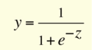
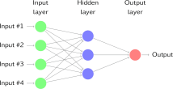
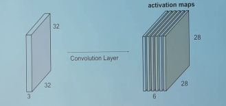
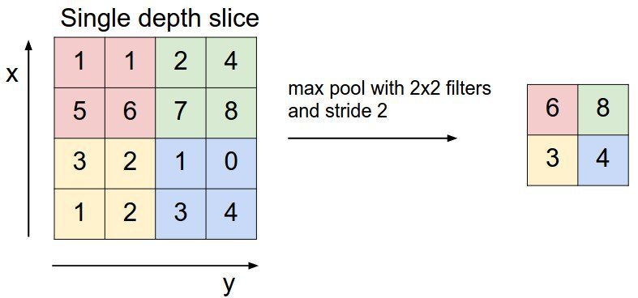
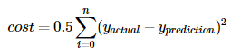

为了演示如何构建基于卷积神经网络的图像分类器，我们将构建一个6层神经网络，用于识别和分离狗的图像和猫的图像。我们将构建的这个网络是一个非常小的网络，您也可以在CPU上运行。传统的神经网络非常擅长进行图像分类，如果在CPU上接受过培训，则需要更多的参数并花费大量时间。但是，在这篇文章中，我的目标是向您展示如何使用Tensorflow构建真实世界的卷积神经网络，而不是参与ILSVRC。在我们开始使用Tensorflow教程之前，让我们先介绍一下卷积神经网络的基础知识。
CNN的基础知识
神经网络本质上是解决优化问题的数学模型。它们由神经元构成，是神经网络的基本计算单元。神经元接受输入（比如说x），对它做一些计算（比方说：用变量w乘以它并加上另一个变量b）来产生一个值（比如说; z = wx b）。该值被传递给称为激活函数（f）的非线性函数，以产生神经元的最终输出（激活）。激活功能有很多种。其中一种流行的激活函数是Sigmoid：

使用Sigmoid函数作为激活函数的神经元将被称为Sigmoid神经元。神经元根据激活函数被命名，激活函数有很多种，如RELU，TanH等（请记住这一点）。一个神经元可以连接到多个神经元，如下所示：

在此示例中，您可以看到权重是连接的属性，即每个连接具有不同的权重值，而偏差是神经元的属性。这是产生输出y的sigmoid神经元的完整过程：
神经网络层（Layer）:
如果将神经元堆叠在一条线上，它就称为一层;这是神经网络的下一个组成部分。

如上所示，绿色神经元构成1层，这是网络的第一层，输入数据通过该层传递到网络。同样，最后一层称为输出层，如红色所示。输入和输出层之间的层称为隐藏层。在这个例子中，我们只有一个隐藏层，以蓝色显示。具有许多隐藏层的网络往往更准确而被称为深度网络，使用这些深度网络的机器学习算法被称为深度学习。
神经网络层的种类：
通常，一层中的所有神经元都进行类似的数学运算，并且神经网络层的命名往往取决于其进行的数学运算（输入和输出层除外，因为它们几乎不进行数学运算）。以下是您应该了解的最流行的图层类型：
卷积层
卷积是一种数学运算，用于单次处理以过滤信号，在信号中找到模式等。在卷积层中，所有神经元都将卷积运算应用于输入，因此它们被称为卷积神经元。卷积神经元中最重要的参数是滤波器大小，假设我们有一个滤波器大小为5 5 3的层。另外，假设馈送到卷积神经元的输入是具有3个通道的大小为32 * 32的输入图像。

让我们从图像中选择一个5 5 3（彩色图像中的通道数为3）大小的块，并用我们的滤波器（w）计算卷积（点积）。这一个卷积运算将产生一个数字作为输出。并且我们还需将偏差（b）添加到此输出中。

为了计算点积，过滤器的第三维必须与输入中的通道数相同。 即，当我们计算点积时，它是5 5 3大小的块的矩阵乘法，具有5 5 3大小的滤波器。
我们将在整个输入图像上滑动卷积滤波器以计算整个图像的输出，如下图所示：

在这种情况下，我们一次将窗口滑动1个像素。如果在某些情况下，人们将窗户滑动超过1个像素。这个数字称为步幅(stride)。
如果你在2D中连接所有这些输出，我们将有一个大小为28 28的输出激活图(activation map)（你能想到为什么3232的输入、5*5的过滤器(filter)、1的步幅(stride)，会得到28*28的输出吧）。通常，我们在一个卷积层中使用多于1个滤波器。如果我们的示例中有6个滤波器，则输出的大小为28 28 6

如您所见，在每次卷积之后，输出的大小会减小（在这本例中，我们将从32 32变为28 28）。 在具有多个层的深度神经网络中，输出将以这种方式变得非常小，这不能很好地工作。 因此，在输入层的边界上添加零以使输出与输入层的大小相同是标准做法。 因此，在此示例中，如果我们在输入层的两侧添加大小为2的填充，则输出层的大小将为32 32 6，这也非常适合实现目的。 假设您有一个大小为N * N的输入，过滤器大小为F，您使用S作为步幅，输入添加大小为P的0。然后，输出大小将为：
(N-F+2P)/S +1
池化层
池化层主要在卷积层之后立即使用，以减小空间大小（仅宽度和高度，而不是深度）。这减少了参数的数量，因此减少了计算。此外，较少数量的参数可以避免过度拟合（现在不用担心，稍后会对其进行描述）。最常见的汇集形式是Max pooling，其中我们采用大小为F F的过滤器，并对图像的F F大小部分应用最大操作。

- 如果取平均数取代最大值，它将被称为平均池化，但这样的方法不是很受欢迎。
如果输入的大小为w1 h1 d1，滤波器的大小为f f，步长为S.则输出大小为w2 h2 * d2为：
w2= (w1-f)/S +1
h2=(h1-f)/S +1
d2=d1
最常见的池化是使用尺寸为2 * 2且步幅为2的过滤器完成的。您可以使用上面的公式计算，它实际上将输入的大小减半。

全连接层
如果层中的每个神经元接收来自前一层中所有神经元的输入，则该层称为完全连接层。该层的输出通过矩阵乘法后跟偏置偏移来计算。
了解训练的过程
深度神经网络只不过是智能的数学模型，它在某种程度上模仿了人类的大脑。当我们尝试训练神经网络时，我们需要做两件基本的事情：
神经网络的结构
在设计神经网络的架构时，您必须决定：如何安排图层？要使用哪些图层？每层使用多少神经元等？设计架构是一个稍微复杂和高级的主题，需要大量的研究。有许多标准体系结构可以很好地解决许多标准问题。例如AlexNet，GoogleNet，InceptionResnet，VGG等。首先，您应该只使用标准网络架构。在获得神经网络的大量经验后，您可以开始设计网络。因此，我们现在不用担心。
正确的权重(weight)/参数(parameters)
一旦确定了网络的架构;第二大变量是权重（w）和偏差（b）或网络的参数。训练的目的是获得所有这些参数的最佳值，从而可靠地解决问题。例如，当我们尝试在狗和猫之间构建分类器时，我们寻找参数，使得如果输入是猫的图像， 输出层输出的结果认为它是猫的概率是1.
您可以使用称为反向传播(backward propagation)的过程找到最佳参数集，即您从一组随机参数开始并不断更改这些权重，以便为每个训练图像获得正确的输出。有许多优化方法可以在数学上快速找到正确的权重来更改权重。 GradientDescent就是这样一种方法（向后传播和优化器方法来改变梯度是一个非常复杂的主题。但是现在我们不需要担心它，因为Tensorflow将会负责它）
那么，我们先为神经网络设定一些初始的随机值，然后将一张狗的图片输入到神经网络中。 得到的结果是0.1， 也就是说我们的神经网络判断出它是狗的概率为0.1， 是猫的概率为0.9。现在我们用反向传播算法缓慢地改变参数，使得该网络判断其为狗的概率在下一次迭代中增加， 有一个变量用于控制在训练中我们改变网络中的参数的素的， 他被称为学习率(learning rate) ， 如果你再考虑一下， 我们希望还定义了一个称之为损失(loss)的数字，表示训练是否朝着正确的方向发展， 通常来说， 损失以这样的方式定义， 随着损失的降低， 网络的准确性也会提高， 因此我们密切关注损失， 我们会继续进行很多次向前和反向传播算法迭代， 知道成本停止下降， 定义损失的方法有很多种， 其中一个简单的就是平方根损失。
假设yprediction是包含所有训练图像的输出向量， yactual是包含这些标记图像的实际值，因此如果我们最小化这两个变量之间的距离， 它将是衡量训练成果的一个很好的指标。 因此我们将损失定义为:

这是一个非常简单的损失示例，但在实际训练0中，我们使用更复杂的成本度量，如交叉熵成本。但Tensorflow中已经集成了许多这些损失函数，因此我们现在无需担心这些损失的细节。训练完成后，这些参数和架构将保存在二进制文件（称为model）中。在生产设置中，当我们得到狗/猫的新图像时，我们将该模型加载到相同的网络体系结构中并计算新图像是猫/狗的概率。这称为推理(inference)或预测(prediction)。
为了简化计算，并非所有训练数据都立即被馈送到网络。 相反，假设我们总共有1600张图像，我们将它们分成小批量，比如16或32号，称为批量大小(batch size)。 因此，需要100或50轮（迭代）才能将完整数据用于训练。 这被称为一个时期(epoch)，即在一个时期中，网络一次看到所有训练图像。 还有一些事情要做来提高准确性，但我们不不需要一次关注一切。